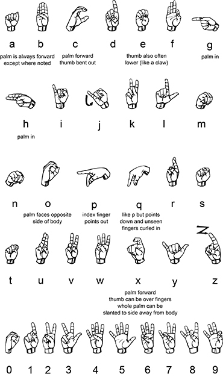

MY NAME IS
ANIK CHATTERJEE
Computer science engineer with a knack for innovation and, a dependable ability of being a fast and smart
learner, with a professional experience in Machine Learning, Deep learning with a research experience in NLP having a reliable attitude when working
with team, also leading it. With a remarkable ability and passion towards AI and Data Science and to cope up with
complex problems, it is in my nature to keep myself updated on the new and upcoming algorithms of the same
Link to my Resume
• Developed a Machine Learning Model (Logistic Regression) which will predict diseases based on your symptoms with the accuracy written and will give descriptions so that you get healed fast, used NLTK Package for the model to understand the text
• Recognized as one of the top finalists of the Amazon Smbhav Hackathon Organized by Amazon with Skillenza
Sign-language-live-predictor

Developed a Hand-Gesture Recognition Model that converts American Sign Language to English text, per video-frame
Deployed the strategy using PyTorch which would convert ASL to English, Live, with a test-accuracy of 96.6 percent
Recognized as one of the top finalists of the India-East Hackathon organized by the Association of Computing Machinery
Phishing Detection & Influence Analysis
Explored some Security methodologies to check an URL is phishing or not, then build a Machine Learning Model for that, If the URL belongs to a Google Form it’ll Scrap and will show the information is asking there and analysis those are safe or not with that there is another section for email id checking where user can put a random email id and the model will check 3 things that particular email id exists ?,
is it in a black list?, Match the DNs
Developed a process where a user can send a twitter id and the model will scrap first 100tweets and take URLs from the tweets and expand each URL then predict those URLs are Safe or not and if any google form found then same as above
For analyzing the text made a manual dataset on different ads and analyze which ads are influencing people in which way so,
developed a transformer model ‘Bert-base-uncased’ for the model to classify those texts, got 97% accuracy within that small data, made a confidence model that will show in which prediction the model is more confident, stored near about 50k data took those confident prediction used to build a stronger dataset then apply the model and got near about 92% accuracy

Scrap the illegal information from the web then mined the data and made a perfect dataset for understanding the pattern
Plot a Histogram and a Graph by that Dataset we made, so it’ll be easy for all to understand the focusing time for each wildlife
Certified as the Winning Project of ZooHackathon, 2019, intended to alert wildlife activists of these illegal activities

Track Covid-19 after analyzing a person’s X-RAY
This Cnn (convolutional neural network) model is baysed on binary black and white classifier